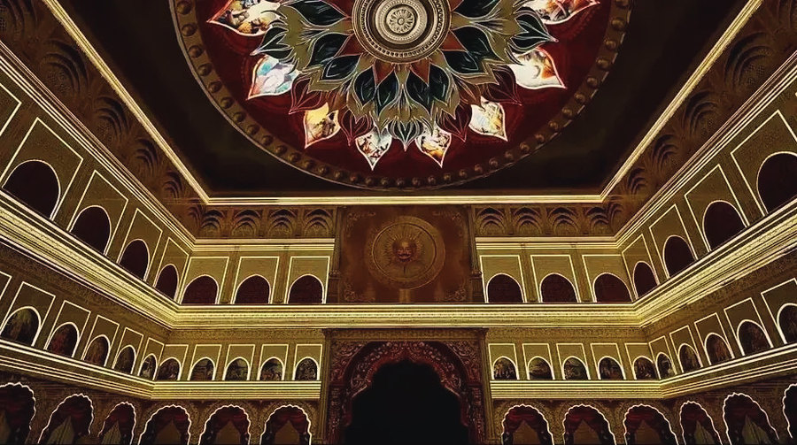
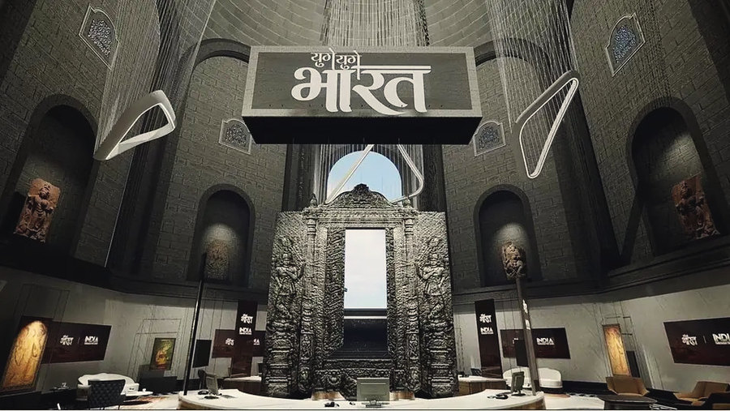

Positioning.
Story-led and whole-room: the one independent consultant who carries a single creative vision from the brief to opening night.
- 3.1Statement and map
- 3.2Pillars, proof and naming
The whole room, in one hand.
The positioning statement is used in proposals, the media kit and the About page. Do not shorten the “unlike” clause.
For museums, cultural institutions, government bodies and brands that must open a public experience at national scale, Sanzeed Mirza is the independent experiential design consultant who carries one creative vision from the brief to opening night — narrative, space, media and the team — in one person, unlike large studios where strategy, design and delivery are handed between departments, or architects and AV integrators who each own only part of the room.
- Category
- Experiential design and creative direction (museums, experience centres, pavilions, memorials, projection and light shows).
- Frame of reference
- Museum-design and experiential studios; the client’s prior employer Tagbin sits in the same frame.
- Point of difference
- Fifteen years that run from VFX and concept art to directing 60+ museums and centres — one person who can write the story, draw the room, script the media and run the floor.
- Reason to believe
- 90 projects directed, three published case studies, Prime Minister Museum / Ram Katha Show / Buddha Park, institutional commissioners, a method with named deliverables at each step.

Three pillars, four numbers.
All proof points are confirmed on sanzeed.com. Never round the numbers up, never invent a client or an award.
| Pillar | Confirmed source | Expression in the identity |
|---|---|---|
| Strategic Vision | “Transforming complex ideas into cohesive, purposeful stories — concept through launch.” | The beam: one line from brief to visitor |
| Immersive Craft | “Environments that engage intellectually, emotionally, and physically across every touchpoint.” | The room: dark field, single lit object, large serif |
| Calm Leadership | “Guiding designers, writers, architects, producers and technologists toward unified outcomes.” | Restraint: one accent, measured motion, precise labels |
years
years experiential & museum
projects directed
museums & centres
Prime Minister Museum, New Delhi · Ram Katha Show, Ayodhya · Buddha Park, Uttarakhand · Yuge Yugeen Bharat Museum · India Pavilion Expo 2025 (concept) · G20 Tree Show · Army Museum Abu Dhabi · Dubai Police Control Center. “Trusted by PwC, Microsoft, Discovery and National Museums.”
| Context | Use |
|---|---|
| Brand mark, wordmark, social handles, domain | SANZEED / Sanzeed / @sanzeed |
| Formal, legal, SEO, bylines, invoices, proposals | Sanzeed Mirza |
| Descriptor (always with the full name on first use) | Experiential Design Consultant |
| Never | “Sanzeed Studio”, “Sanzeed Design”, “Mirza Design” — the brand is the person |


